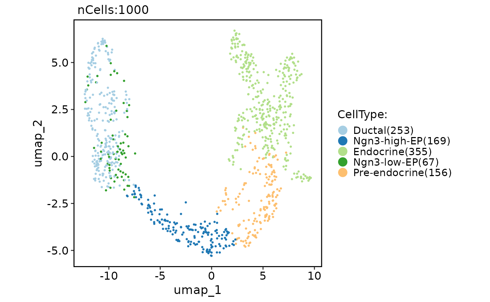

Run GLMPCA (generalized version of principal components analysis)
Source:R/RunGLMPCA.R
RunGLMPCA.RdRun GLMPCA (generalized version of principal components analysis)
Usage
RunGLMPCA(object, ...)
# S3 method for class 'Seurat'
RunGLMPCA(
object,
assay = NULL,
layer = "counts",
features = NULL,
L = 5,
fam = c("poi", "nb", "nb2", "binom", "mult", "bern"),
rev.gmlpca = FALSE,
ndims.print = 1:5,
nfeatures.print = 30,
reduction.name = "glmpca",
reduction.key = "GLMPC_",
verbose = TRUE,
seed.use = 11,
...
)
# S3 method for class 'Assay'
RunGLMPCA(
object,
assay = NULL,
layer = "counts",
features = NULL,
L = 5,
fam = c("poi", "nb", "nb2", "binom", "mult", "bern"),
rev.gmlpca = FALSE,
ndims.print = 1:5,
nfeatures.print = 30,
reduction.key = "GLMPC_",
verbose = TRUE,
seed.use = 11,
...
)
# S3 method for class 'Assay5'
RunGLMPCA(
object,
assay = NULL,
layer = "counts",
features = NULL,
L = 5,
fam = c("poi", "nb", "nb2", "binom", "mult", "bern"),
rev.gmlpca = FALSE,
ndims.print = 1:5,
nfeatures.print = 30,
reduction.key = "GLMPC_",
verbose = TRUE,
seed.use = 11,
...
)
# Default S3 method
RunGLMPCA(
object,
assay = NULL,
layer = "counts",
features = NULL,
L = 5,
fam = c("poi", "nb", "nb2", "binom", "mult", "bern"),
rev.gmlpca = FALSE,
ndims.print = 1:5,
nfeatures.print = 30,
reduction.key = "GLMPC_",
verbose = TRUE,
seed.use = 11,
...
)Arguments
- object
An object. This can be a Seurat object, an assay object, or a matrix-like object.
- ...
Additional arguments to be passed to the glmpca::glmpca function.
- assay
A character string specifying the assay to be used for the analysis. Default is NULL.
- layer
A character string specifying the layer to be used for the analysis. Default is "counts".
- features
A character vector specifying the features to be used for the analysis. Default is NULL, which uses all variable features.
- L
An integer specifying the number of components to be computed. Default is 5.
- fam
A character string specifying the family of the generalized linear model to be used. Currently supported values are "poi", "nb", "nb2", "binom", "mult", and "bern". Default is "poi".
- rev.gmlpca
A logical value indicating whether to perform reverse GLMPCA (i.e., transpose the input matrix) before running the analysis. Default is FALSE.
- ndims.print
An integer vector specifying the dimensions (number of components) to print in the output. Default is 1:5.
- nfeatures.print
An integer specifying the number of features to print in the output. Default is 30.
- reduction.name
A character string specifying the name of the reduction to be stored in the Seurat object. Default is "glmpca".
- reduction.key
A character string specifying the prefix for the column names of the basis vectors. Default is "GLMPC_".
- verbose
A logical value indicating whether to print verbose output. Default is TRUE.
- seed.use
An integer specifying the random seed to be used. Default is 11.
Examples
pancreas_sub <- RunGLMPCA(object = pancreas_sub)
#> ℹ [2025-06-28 03:20:44] GLMPC_ 1
#> Positive: Ncan, L1cam, S100g, Bhlhe23, Ppy, AI854703, Onecut3, C8b, Gm13613, Gsdma2
#> Chrna3, Ina, Slc4a10, Crmp1, Efcab6, Otc, Ifit1bl1, Gabrg2, Hspa1a, Adamts18
#> Syt4, Galnt9, Islr2, Adgrv1, Crtac1, Nkx6-3, Tmem252, Col19a1, Fbxl2, Gast
#> Negative: Slc34a2, Bmp3, Il1r2, Nipal4, Tmem100, Krt17, P2ry2, Rarres2, RP23-53O7.2, Tnni3
#> Upk3b, Ptgfr, 1700001L19Rik, Aldh1a7, Eppin, Ctgf, Plscr2, Aldh1a2, Xkr5, Napsa
#> Edn1, Mmp7, Myo1h, Wnt5a, Slc22a2, 4930524B15Rik, Nlgn1, Lce6a, Rpp25, Prr5l
#> GLMPC_ 2
#> Positive: Sostdc1, Tmem255b, Gm26808, Dlgap1, Mapk11, Lix1, Gabra1, Pkd2l1, Tfap2c, Aldh1a7
#> Bhlhe23, Plxnd1, Timp3, A730017C20Rik, E130114P18Rik, Fgf21, Grin3a, Snai2, 2210407C18Rik, 1700001L19Rik
#> Siglece, Atoh8, Cldn1, Sds, Snhg11, Fgf18, Sncg, Slc4a1, Fgf13, Bhmt2
#> Negative: Il1r2, Gast, Nlgn1, RP23-53O7.2, Car3, Platr26, Speer4c, Slco1a6, Kcnj13, Prl
#> Rgs4, Gm20554, Aard, Gabrg2, March11, Foxd3, Foxc1, Wdr20rt, Trpc5, D130043K22Rik
#> Meikin, Onecut3, 4930426D05Rik, Tnfaip8l3, Hspa1a, Bmp3, Slc30a8, Cartpt, Gm13613, Adgrv1
#> GLMPC_ 3
#> Positive: Sycp3, Siglech, Fgf8, Cnksr2, Ckm, Lypd1, Rrad, Gdf15, Gm10382, Gm26522
#> Gm42637, Chil5, Nr2f2, Fam162b, Glod5, Rad54l, Stmn1, Etv4, Serpina1c, Hist4h4
#> Vsig8, Gm26532, Rsph4a, Akna, Megf6, Nhlh1, Hist1h1b, Rin3, Serpina1e, BC039966
#> Negative: Bmp3, Col19a1, Mapk11, Cntn1, Il1r2, Nipal4, Npy, Sostdc1, Sst, Slc34a2
#> Myo1h, Dlgap1, Tmem100, S100g, Aldh1a7, Klhl14, Ppy, Ppp1r27, F730016J06Rik, 1700001L19Rik
#> Krt17, RP23-53O7.2, Fgb, Gm17767, Cldn1, Tmem255b, Gm13613, Gm26808, Iapp, Ins1
#> GLMPC_ 4
#> Positive: Col19a1, Gcg, Bhlhe23, F730016J06Rik, Krt33b, Fgb, Vipr1, Thbd, Aldh1a7, Slc34a2
#> Tfap2c, Snhg7os, Necab3, Upk3b, Fmod, Ghrl, Nkx6-3, Fgf8, Pou6f2, Parp3
#> Pdcd1, Trim29, Ppp1r3b, Gast, C8b, Cd2, Serpina1a, Ppp1r27, Slc4a1, Cym
#> Negative: Sst, Cldn1, Mapk11, Npy, 1700016F12Rik, Slc2a3, Irx3, Myo1h, Chrna3, Etv4
#> Slc9a5, Kcnk10, Prl, Syndig1l, Rasgef1c, Tcerg1l, Mapk12, M1ap, Dscam, Dpysl3
#> Arl14, Gm38037, Prima1, Cxcl10, Frzb, Ins2, Chrnb4, Fgf13, A730017C20Rik, Fam159b
#> GLMPC_ 5
#> Positive: Gm17455, Nid1, Ghrl, Avpr1b, Ngf, Irs4, Foxd3, Nkx6-3, Sst, Cntn1
#> Fgf21, Slc9a5, Bmp3, Spata20, Speer4c, Arhgap22, Ifit1bl1, Irx3, Mboat4, Car3
#> Kcnk10, Onecut3, Lrrtm3, Ctnna3, Isg15, Gast, Acsl1, St8sia2, Dscam, Cldn1
#> Negative: D130043K22Rik, Gabrg2, Ins1, Ppp1r27, S100g, Gm38112, Col19a1, Nes, Slc4a1, 2410021H03Rik
#> Cdkn2c, Nipal4, Krt33b, Xkr5, Iqgap3, Rpp25, Ins2, Gm38037, Napsa, Fbxl2
#> E030037K01Rik, Brca1, Aurkb, Pif1, Bcas3os2, Cbln1, Adra2c, Tmem215, Arhgap36, Mxd3
CellDimPlot(
pancreas_sub,
group.by = "CellType",
reduction = "glmpca"
)
#> Warning: No shared levels found between `names(values)` of the manual scale and the
#> data's fill values.
